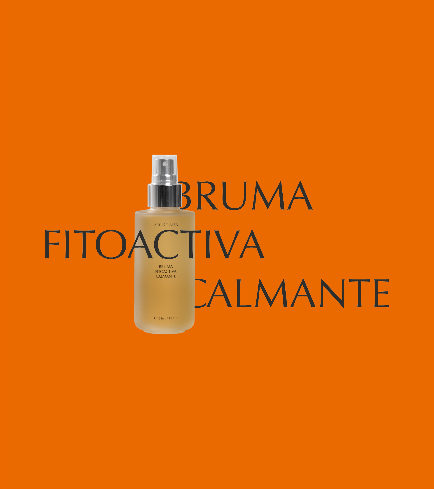

←
Volver a empezar
¿Cuándo se recomienda utilizar la BRUMA FITOACTIVA CALMANTE de Arturo Alba?
→
Tantas veces como la piel lo necesite durante el día
→
Únicamente por la noche, ya que contiene retinol en su formulación
→
Exclusivamente durante el día, porque incorpora SPF como activo principal
→
2-3 veces por semana, como tratamiento intensivo de acción puntual
SIGUIENTE
→
